Doram Equipment Exchange
In Lasagna Town (@go 40), on the upper left part of the map, there are 4 NPCs (Goma, Yota, Dandi and Jogi @navi lasagna 136, 248) known as the Chiara Family. They are all siblings, and they don't see their parents for a long time now: their father departed years ago to search for the world's biggest tuna, whereas their forager mother once went to a forest to grab "a special fruit" and never returned - nobody knows why or how.
Thus, to maintain the family, the 4 kids negotiate Doram Equipments for 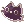 Doram Tokens, which then are used to buy the Charms the family members craft themselves. These Charms are pretty powerful Acessories and almost all Doram endgame builds need at least one of them to be effective. Some boost Support/Tanking power, other boost damage from skills in the Magical branch, and other boost damage from skills in the Physical Ranged branch.
Here's what each NPC does:
Dandi
Dandi is the youngest of the 3 daughters and also the youngest sibling. She cries profusely whenever someone insinuates her parents aren't coming back, but tries not to think about it.
She gives you Tokens for Doram Armor pieces you hand in to her, with the ammount varying of quantity and rank of said armor.
(Ironically, she can also take the each one of the crafted Talismans back, but it's given to the player far less than what it takes to craft said talisman.)
| Item | Tokens Given |
|---|---|
| 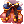 Doram Elegant Suit [1] | 4 each armor |
| 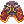 Doram Elegant Manteau [1] | 4 each garment |
 Doram Elegant Shoes [1] Doram Elegant Shoes [1]
|
4 each footwear |
| 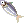 Superior Tuna Talisman [1] | 4 each talisman |
| 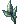 Superior Leaf Talisman [1] | 4 each talisman |
 Superior Bunny Talisman [1] Superior Bunny Talisman [1]
|
4 each talisman |
| Doram Luxury Suit [1] | 3 each armor |
| Doram Luxury Manteau [1] | 3 each garment |
| 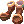 Doram Luxury Shoes [1] | 3 each footwear |
 Intermediate Tuna Talisman [1] Intermediate Tuna Talisman [1]
|
3 each talisman |
 Intermediate Leaf Talisman [1] Intermediate Leaf Talisman [1]
|
3 each talisman |
| 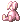 Intermediate Bunny Talisman [1] | 3 each talisman |
| 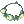 Fresh Grass Necklace [1] | 2 each necklace |
 Cute Grass Necklace [1] Cute Grass Necklace [1]
|
2 each necklace |
| Charm Grass Necklace [1] | 2 each necklace |
| Lesser Tuna Talisman [1] | 2 each talisman |
| Lesser Leaf Talisman [1] | 2 each talisman |
| Lesser Bunny Talisman [1] | 2 each talisman |
| 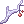 Shining Eggplant Talisman [1] | 2 each talisman |
| 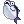 Fresh Tuna Talisman [1] | 2 each talisman |
| 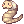 Chubby Earthworm Talisman [1] | 2 each talisman |
Jogi
Jogi is the only son of the family, and the second youngest of all siblings. He has a very keen idea with being a soldier, and thus ends up being careless in attempts of showing bravery (like wandering on the forest alone). You "surrender" Doram Weapons with him.
Just like Dandi, the ammount of Tokens he gives depends on ammount and rank of the weapons you give to him.
| Item | Tokens Given |
|---|---|
| 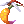 Magic Yellow Foxtail Staff [1] | 4 each weapon |
| 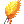 Elaborated Yellow Foxtail Staff [1] | 4 each weapon |
| 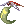 Magic Foxtail Staff [2] | 3 each weapon |
 Elaborate Foxtail Replica [2] Elaborate Foxtail Replica [2]
|
3 each weapon |
 Wondrous Foxtail Staff [2] Wondrous Foxtail Staff [2]
|
2 each weapon |
| 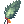 Fine Foxtail Replica [2] | 2 each weapon |
Yota
Yota is the second oldest daughter. She usually appears to be angry, but in fact she's only trying to appear strong for her siblings. Yota worries a lot about her family and wishes she could do more for them, becoming sad whenever her parents are mentioned.
She's the one that actually trades the Tokens for Talismans, but only the most basic versions of them.

| Item | Token Cost |
|---|---|
| Lesser Tuna Talisman [1] | 10 each |
| Lesser Leaf Talisman [1] | 10 each |
| Lesser Bunny Talisman [1] | 10 each |
| Shining Eggplant Talisman [1] | 30 each |
| Fresh Tuna Talisman [1] | 30 each |
| Chubby Earthworm Talisman [1] | 30 each |
Goma
Goma is the oldest daughter, and also the oldest of all siblings. Given the family's parents are missing, it's now up to her to take care of the family and keep them cheerful every day - although getting more and more tired and worried. She holds a big sense of protection towards each one, although fearing she may not be able to.
She's the one responsible for upgrading the Lesser Talismans to their better versions, Intermediate and Superior Talismans. Each upgrade has a cost that depends on which level you're upgrading to: going from Lesser to Intermediate it costs 30 Tokens; whereas upgrading from Intermediate to Superior costs another 90 Tokens.
| Base | First Upgrade Cost | Second Stage | Second Upgrade Cost | Final Stage |
|---|---|---|---|---|
| Lesser Tuna Talisman [1] | 30 Tokens | Intermediate Tuna Talisman [1]
|
90 Tokens | Superior Tuna Talisman [1] |
| Lesser Leaf Talisman [1] | 30 Tokens | Intermediate Leaf Talisman [1]
|
90 Tokens | Superior Leaf Talisman [1] |
| Lesser Bunny Talisman [1] | 30 Tokens | Intermediate Bunny Talisman [1] | 90 Tokens | Superior Bunny Talisman [1]
|